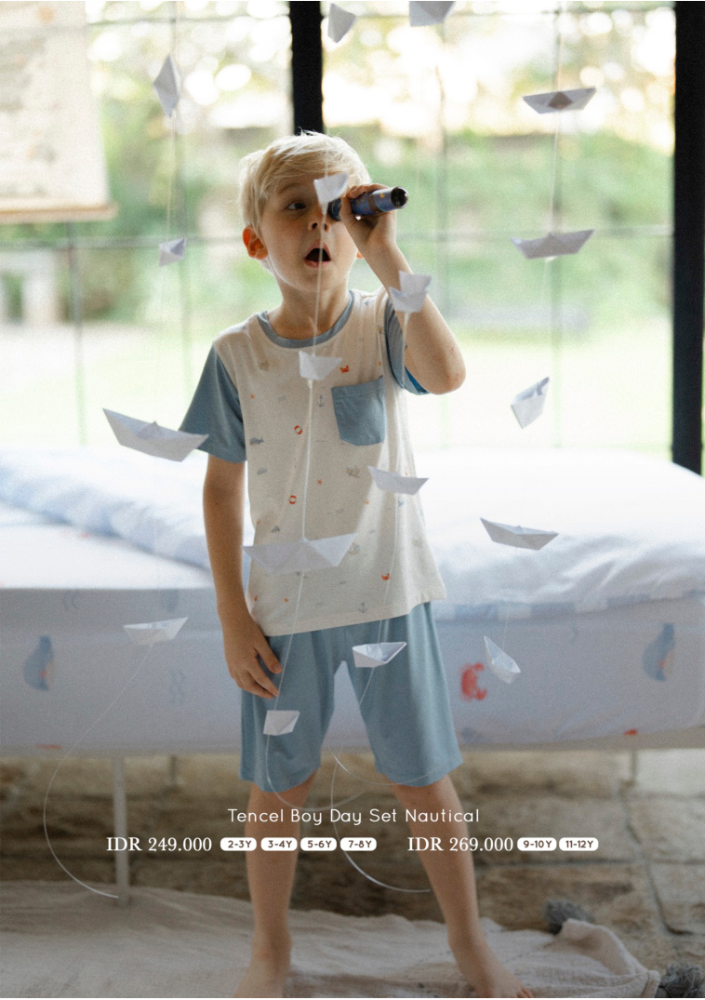

— The Collections
Four little worlds,
Four little worlds,
one growing family.
Each collection is its own small story — released in soft, considered drops, hand-finished, made to be lived in.
Each collection is its own small story — released in soft, considered drops, hand-finished, made to be lived in.

The everyday wardrobe — soft tees, ribbed bodysuits, day sets and the little bonnets babies love. Sizes from 0–6M to 9–10Y.
Shop Joy in the Air →
A pastel world of bunny prints, rabbit-collared dresses and TENCEL pyjamas in sage and blush. Pieces that feel like a soft Sunday morning.
Shop Whimsical Garden →
The clean staples — polos, linen pants, cotton rompers, the nautical TENCEL sets they'll grow into and out of in a season.
Shop Classic Redefined →
Adult TENCEL tees and mama-and-mini matching sets — for the photo, the lazy weekend, the quiet moments that pass too quickly. Sized XS–XXL.
Shop Mama & Me →